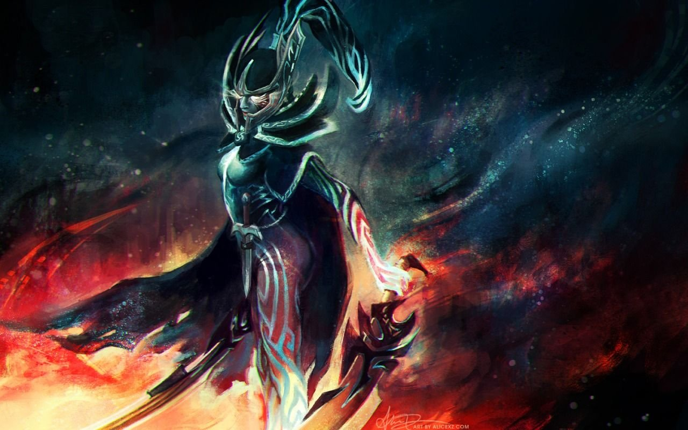
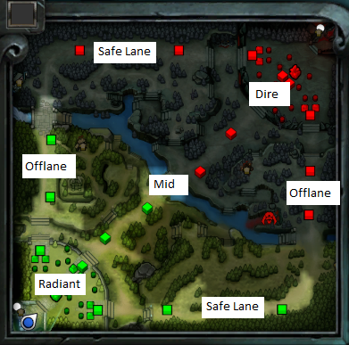
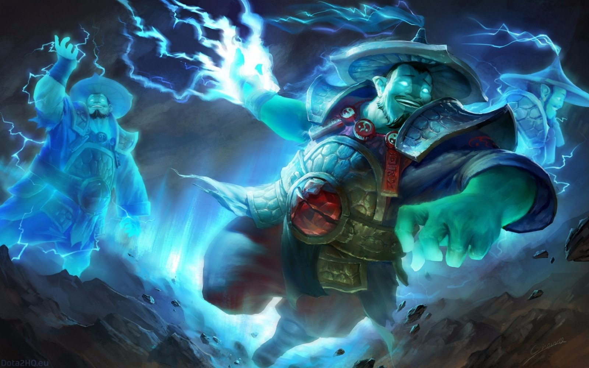
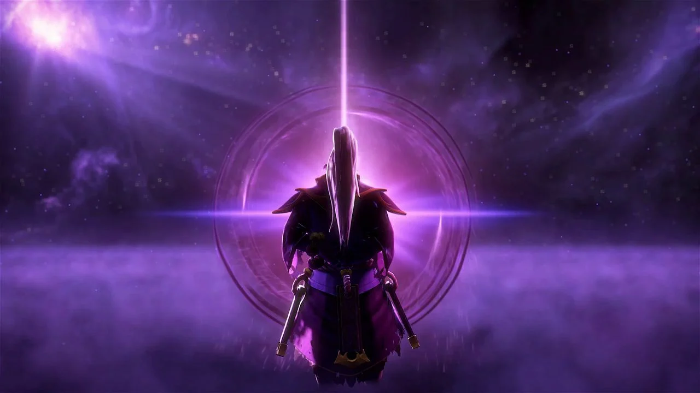

ЛЮБИМЫЕ ГЕРОИ
КТО НЕ МОЖЕТ ЖИТЬ БЕЗ КРИПОВ, А КТО - БЕЗ ГЛИМЕРА
Это статья о том, каких героев я предпочитаю в игре Dota 2

Dota 2 — многопользовательская командная компьютерная игра в жанре MOBA, разработанная и изданная корпорацией Valve. Игра является продолжением DotA — пользовательской карты-модификации для игры Warcraft III: Reign of Chaos и дополнения к ней Warcraft III: The Frozen Throne. Игра изображает сражение на карте особого вида; в каждом матче участвуют две команды по пять игроков, управляющих разными «героями» — персонажами с различными наборами способностей и характеристиками. Для победы в матче команда должна уничтожить особый объект — «крепость», принадлежащий вражеской стороне, и защитить от уничтожения собственную «крепость». Dota 2 работает по модели free-to-play с элементами микроплатежей.
Существует разделение по ролям : carry(1), midlane(2), offlane(3), semi-support(4), full-support(5). Обычно carry-герои являются самыми богатыми, потом идут mid-герои, затем "тройки" (они же offlane), "четвёрки"(semi-support) и в конце "пятёрки"(full-support). Золото можно получить за убийство крипов - основной источник золота для керри; за убийство героя, снятие вардов и так далее. Чаще всего на линиях стоят 2 на 2, а в миде - 1 на 1.

Моя main(основная) роль - мид. Зачастую, герои в миде стоят на своей линии примерно до 5-6 минуты, а затем активно начинают двигаться по карте, создавая давление. За счёт того, что в миде герои стоят один на один, они получают больше опыта, поэтому у мидеров есть преимущество по уровню перед героями на боковых линиях, которое можно реализовывать, смещаясь на другую линию.

Лично я предпочитаю брать в мид активных героев, которые с ранних минут могут перемещаться по карте. Моими сигнатурными героями являются : Storm Spirit, Ember Spirit, Void Spirit, Puck, Primal Beast и другие. Про моего любимого игрока можно почитать тут.
